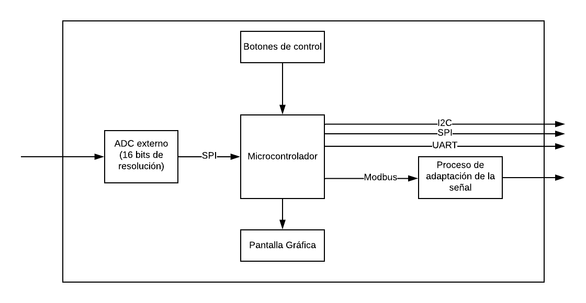

Esta página presenta los avances del proyecto ECE que estoy elaborando en el ciclo. El proyecto se trata de un adaptador de un sensor de temperatura para enviar su valor mediante diferentes buses de comunicación SPI, I2C, UART y MODBUS , esto otorga flexibilidad al momento de escoger el dispositivo que recibirá el dato de la temperatura. Además, se puede configurar los parámetros de dichos potrocolos de comunicación mediante botones y una pantalla gráfica que hace más amigable su manejo del adaptador.
Este diagrama de bloques se ha realizado para entender con mayor facilidad los componentes a usar en el proyecto y las conexiones entre estos; además, con esto se puede tener una idea más concreta del producto final del proyecto.
La configuración de los buses es por parte del usuario, él tiene toda la libertad de configurar la mayoria de los parametros de los buses. A continuación, se mostrará una tabla donde resume todo lo explicado anteriormente para mayor entendimiento.
| Buses de Comunicación | Parámetros de Configuración |
|---|---|
| UART | bits de paridad, # de bits, velocidad de baudios |
| SPI | bits de paridad, # de bits, velocidad de baudios |
| I2C | dirección, frecuencia del SCK, registro destino |
| MODBUS | bits de paridad, # de bits, velocidad de baudios |
Esto es todo sobre el proyecto que estamos presentando, espero que haya sido de su agrado leer sobre esta propuesta.
Cualquier consulta puede escribirme en el siguiente correo: jose.vasquez.a@utec.edu.pe